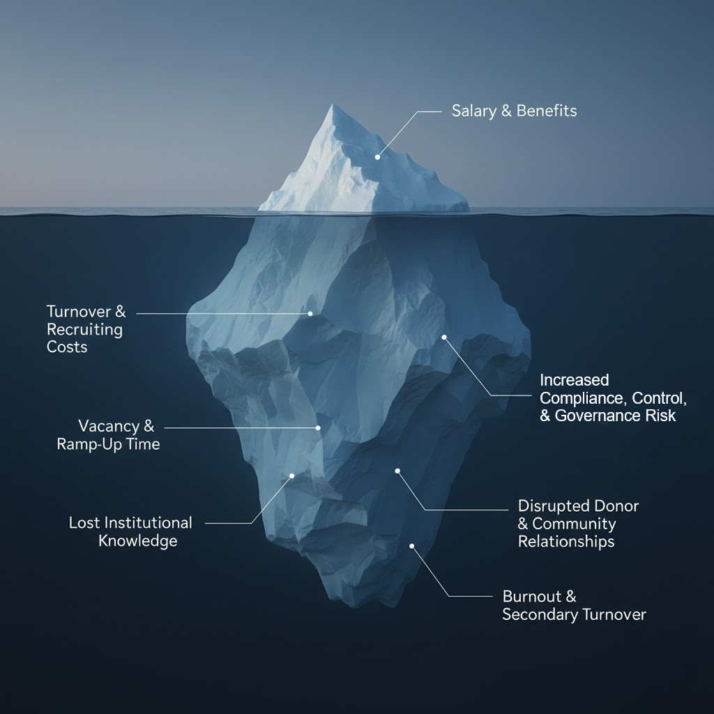
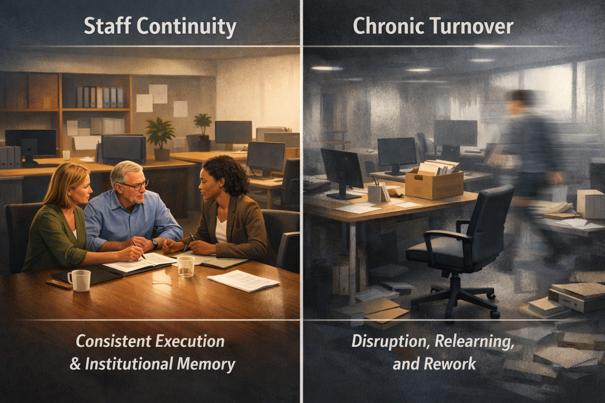
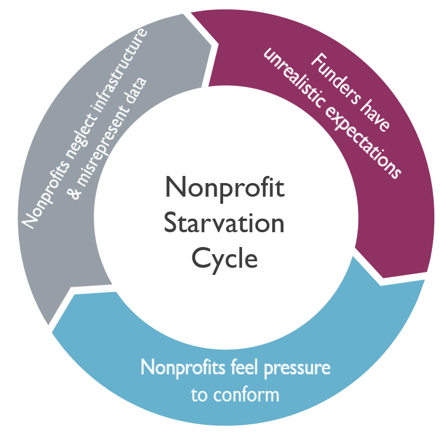
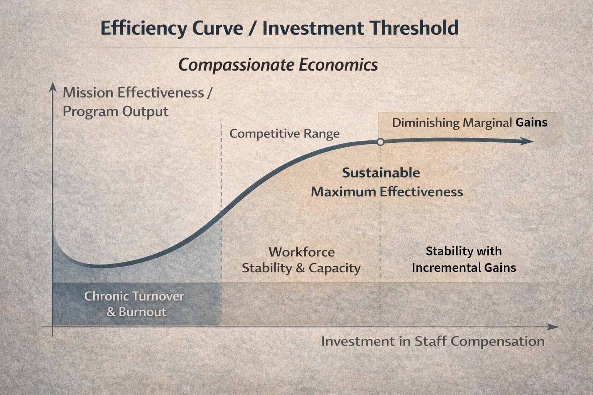
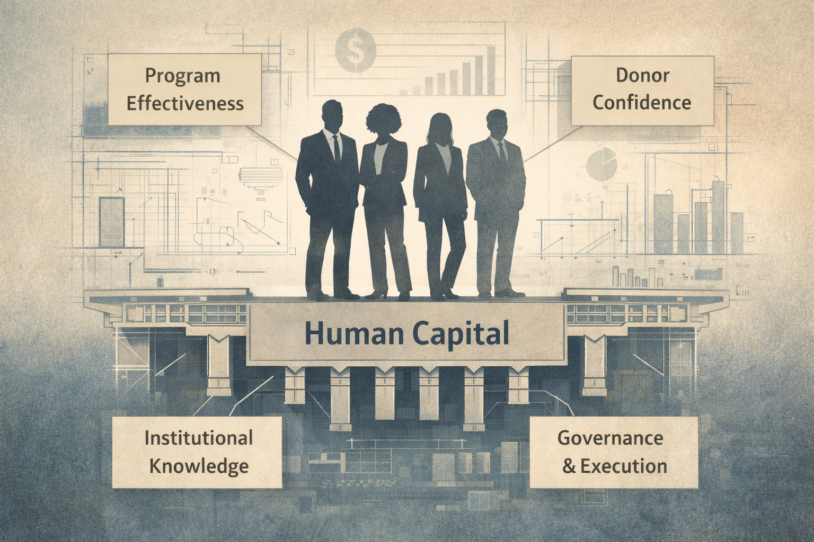

Why competitive compensation is an investment in mission capacity—not a diversion from it
There's a persistent belief in the nonprofit sector that keeping salaries low demonstrates fiscal responsibility—that every dollar not spent on staff is a dollar available for the mission. It's an intuitive argument. It's also wrong.
Decades of research from the corporate sector—and increasingly from nonprofit-specific studies—demonstrates that underinvesting in compensation doesn't save money. It destroys value. The question isn't whether your organization can afford to pay competitive salaries. The question is whether it can afford not to.
When an employee leaves, the visible costs—posting the job, interviewing candidates, perhaps paying a recruiter—are only the beginning. The full cost includes productivity lost during vacancy, time spent by remaining staff covering duties, onboarding and training the replacement, the months it takes a new hire to reach full productivity, and the institutional knowledge that walks out the door permanently.
Visible compensation costs are just the tip of the iceberg. The true cost of turnover lies beneath the surface.
How significant are these costs? The Society for Human Resource Management (SHRM) estimates that replacing an employee costs 50% to 200% of their annual salary, depending on the role's complexity. The Center for American Progress found that for executive positions, turnover costs can reach 213% of annual salary.
Let's make this concrete. If your $75,000-per-year program director leaves, you're looking at $37,500 to $150,000 in total replacement costs. If your executive director departs, multiply their salary by two or more. These aren't theoretical numbers—they represent donor dollars being spent on recruiting and retraining rather than on programs.
When researchers ask why employees leave, compensation consistently tops the list. According to PayScale's 2023 Compensation Best Practices report, 35% of organizations identified compensation as the primary reason for voluntary turnover, with another 18% citing it as a secondary factor. The Nonprofit Leadership Alliance found that among nonprofit employees specifically, 47.6% cite compensation and benefits as a reason for leaving.
The contrast between organizational stability and chronic turnover affects every aspect of mission delivery.
Research from Harvard University quantified this relationship directly: among warehouse workers, every $1 per hour increase in pay produced a 2.8% improvement in retention. Conversely, every $1 per hour decrease caused a 28% increase in turnover. The relationship between pay and retention isn't theoretical—it's measurable and significant.
The for-profit world grappled with this question more than a century ago and reached a clear conclusion. The economics of "efficiency wages"—paying above market rates to improve productivity and retention—is now well-established in labor economics research.
In 1914, Henry Ford doubled his workers' wages to $5 per day—well above market rates. Critics predicted the move would bankrupt the company. Instead, the results were remarkable:
This wasn't philanthropy—it was smart business. The savings from reduced turnover and increased productivity more than offset the higher wage costs. NBER economists who studied Ford's policy concluded it was consistent with efficiency wage theory: paying more made the company more profitable.
This principle continues to prove itself. Costco pays employees significantly more than competitors like Walmart. The result? Industry-leading sales per employee, dramatically lower theft, higher customer satisfaction, and employee retention rates that save millions in annual recruiting and training costs. The company's stock has consistently outperformed its low-wage competitors.
A meta-analysis published by the Academy of Management confirms what these case studies suggest: across industries, high turnover negatively impacts organizational performance, especially where roles require knowledge, relationships, and coordination. Sound familiar? These are precisely the qualities that drive success in nonprofit work.
The nonprofit sector has a term for what happens when organizations chronically underinvest in their own capacity: the "starvation cycle." First identified in research from the Urban Institute and later named by the Stanford Social Innovation Review, the starvation cycle describes a self-reinforcing pattern:
The starvation cycle: funders expect low overhead, nonprofits conform, infrastructure erodes, and the cycle repeats.
The result: donor funding leaks through cracks in organizational capacity—burnout, inconsistent delivery, and missed outcomes.
Peer-reviewed research using 25 years of nonprofit data confirmed this phenomenon is real and worsening. The study found that "the brunt of the cuts have fallen on non-executive staff wages," which "heightens the concern of ill effects from a fixation on overhead costs."
Research confirms there's an optimal level of investment in staff. Underspending hurts mission effectiveness just as much as overspending.
A 2022 study published in Nonprofit and Voluntary Sector Quarterly went further, testing whether overhead spending actually affects program outcomes. The finding contradicted conventional wisdom: there is an optimal level of overhead spending, and organizations that spend too little on infrastructure—including staff—deliver worse outcomes than those that invest appropriately. The relationship follows an inverted U-curve: underspending hurts performance just as much as overspending.
The economic principles that drive corporate compensation decisions apply equally to nonprofits. The difference is how we measure return on investment. For corporations, the return is shareholder value. For nonprofits, it's mission impact.
Human capital forms the foundation that supports every aspect of organizational effectiveness.
Consider a foundation program officer with deep expertise in a specialized issue area—say, early childhood literacy or sustainable agriculture. That person has spent years building relationships with grantees, developing sector knowledge, and learning which interventions work in which contexts. When they leave for a better-paying position, the foundation doesn't just lose an employee. It loses:
These losses directly affect the foundation's ability to achieve impact—the very outcome that compensation decisions are supposedly protecting.
Board compensation discussions require balancing short-term budget pressure against long-term organizational capacity.
When discussing compensation with your board or finance committee, consider framing the issue using the same logic corporations use to justify investment in human capital:
"Our programs run on human capital: relationships, judgment, continuity, and institutional knowledge. These assets take years to develop and cannot be quickly replaced."
Quantify the costs where possible:
"Competitive pay is an investment that reduces churn risk, protects revenue through donor relationship continuity, and preserves the institutional knowledge that drives program effectiveness. The question isn't whether payroll is higher—it's whether cost per unit of impact is lower because productivity and retention improve."
Compensation decisions made in the boardroom have lasting consequences for organizational capacity and mission delivery.
Foundations, endowments, and nonprofits exist to create impact. Every decision—including compensation decisions—should be evaluated against that standard. When we underpay staff in the name of keeping overhead low, we're not being frugal. We're spending donor dollars on an expensive cycle of recruiting, training, and rebuilding lost capacity instead of investing in the stable, expert teams that actually deliver results.
The for-profit sector learned this lesson long ago. It's time for the philanthropic sector to catch up.
Competitive compensation isn't a diversion from mission. It's an investment in the capacity to achieve it.
Together Forward Capital works exclusively with foundations, endowments, and nonprofit organizations. We provide investment advisory services with a fiduciary standard, and we understand the unique challenges of managing philanthropic capital—including the difficult tradeoffs boards face when balancing operational investment against program spending. If you're looking for an advisor who gets both sides of the equation—portfolio performance and mission capacity—let's talk.
Schedule a Complimentary ConsultationTurnover Costs and Compensation Research
Efficiency Wage Economics
Nonprofit-Specific Research
Disclosures: This article is for informational purposes only and is not investment, legal, or tax advice. Together Forward Capital is an SEC-registered investment adviser operating as a DBA of R.F. Lafferty & Co., Inc. Registration does not imply a certain level of skill or training.